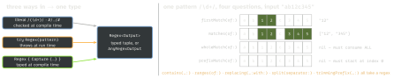

swift · folio
In one line: Regex<Output> (Swift 5.7, iOS 16): Output is the
typed shape of a match, (Substring, captures…). Three builds:
literal (checked + typed at compile time), Regex(string)
(runtime, throws, AnyRegexOutput), RegexBuilder (typed,
composable, embeds Foundation parsers). Matches Characters, returns
String.Index ranges.
Download PDF Print view LaTeX source


How it works
- Literal: parsed by the compiler — bad pattern = compile error; captures become tuple elements,
(?<year>…)a labelled one (m.year). Bare/…/needs Swift 6 mode orBareSlashRegexLiterals(SE-0354);#/…/#always works. - Runtime
try Regex(str)for user/config patterns:m.output[1].substring,m.output["y"]?.substring. - RegexBuilder (
import RegexBuilder):OneOrMore,ZeroOrMore,Optionally,Repeat(2...4),ChoiceOf,Anchor,Lookahead/NegativeLookahead,CharacterClass(.digit,.anyOf("+-")). A literal can sit inside. Captureadds a tuple element (transform can map it);TryCapture’s transform returnsT?—nilfails that attempt and backtracks: parse + validate in one step.Reference(T.self)names a capture:m[ref].- Foundation parsers are components (SE-0357
CustomConsumingRegexComponent):.date(.numeric, locale:, timeZone:),.localizedCurrency(code:locale:)→Decimal,.iso8601(…)— typedDate/Decimalcaptures, no second parse. Always pass locale + time zone. - Options return a new regex:
.ignoresCase(),.dotMatchesNewlines();.matchingSemanticsswitches graphemes (default: e+U+0301 is one.) to scalars..reluctant= lazy+?;Local {…}= atomic group. The engine backtracks.
Example — typed literal + builder
let ym = /(?<y>\d{4})-(?<mo>\d{2})/ // (Substring, y:, mo:)
if let m = "on 2026-09".firstMatch(of: ym) { print(m.y, m.mo) }
import RegexBuilder
let cents = Reference(Int.self)
let line = Regex {
Capture { /CREDIT|DEBIT/ } // Substring
OneOrMore(.whitespace)
Capture(.date(.numeric, locale: Locale(identifier: "en_US"),
timeZone: .gmt)) // Date
OneOrMore(.whitespace)
TryCapture(as: cents) { OneOrMore(.digit) }
transform: { Int($0) } // overflow: nil, no match
}
if let m = "DEBIT 3/5/2026 1250".wholeMatch(of: line) {
let (_, kind, date, _) = m.output; print(kind, date, m[cents]) }vs NSRegularExpression
Swift Regex | NSRegularExpression | |
|---|---|---|
| units | Character (graphemes) | UTF-16 code units (ICU) |
| ranges | Range<String.Index> | NSRange → Range(r, in: s) |
| captures | typed tuple | range(at:); unmatched NSNotFound |
| OS | iOS 16+ | all; runtime errors; $1 templates |
let re = try NSRegularExpression(pattern: #"(\d{4})"#)
let all = NSRange(s.startIndex..., in: s) // NOT s.count
if let m = re.firstMatch(in: s, range: all),
let r = Range(m.range(at: 1), in: s) { print(s[r]) }Performance & anchoring
- Build once (a stored
let), never in a loop.firstMatchretries at every index — anchor (̂,Anchor.startOfSubject) or usewhole/prefixMatch. - Catastrophic backtracking:
/(a+)+$/on"aaaa…b"is exponential — no nested quantifiers,Local. No timeout API: untrusted pattern = ReDoS.
When NOT to use a regex
Fixed text (contains, hasPrefix, split) · JSON (Codable) · URLs (URLComponents) · ISO dates (ISO8601FormatStyle) · nested/balanced input — regex can’t count.
Traps
"abc123".wholeMatch(of: /\d+/)isnil: whole = implicitly anchored both ends.NSRange(location: 0, length: s.count)—countis Characters, NSRange wants UTF-16: emoji break it. UseNSRange(s.startIndex..., in: s).Regex(str)for a fixed pattern forfeits compile-time checks and typed captures./a*/“finds” an empty range at 0.
Remember
“Literal = typed, String = throws, Builder = composes.” Whole anchors, first scans.